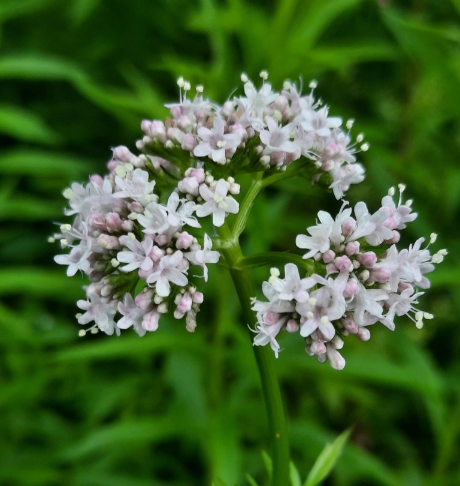

¿Quiénes Somos?
Somos un equipo apasionado por la innovación y el bienestar integral, comprometidos con el desarrollo de soluciones naturales que transformen la manera en que las personas enfrentan el estrés y la ansiedad.
Creemos en el poder de las plantas ancestrales como Valeriana officinalis, Passiflora incarnata, Melissa officinalis y hoja de naranja (Citrus sinensis), cuya eficacia ha sido respaldada por años de uso tradicional. Estas plantas son la base de nuestro producto sublingual, diseñado para brindar alivio de forma rápida y efectiva.
Además, hemos integrado un sistema digital interactivo en forma de una aplicación móvil que:
- Proporciona recomendaciones personalizadas según las necesidades específicas de cada usuario.
- Monitorea el tratamiento a través de un calendario inteligente.
- Ofrece recordatorios y seguimiento continuo para garantizar la mejor experiencia y resultados.
Nuestro objetivo es acompañarte en tu camino hacia el equilibrio emocional y físico, combinando la sabiduría del pasado con la innovación del presente. ¡Estamos aquí para ayudarte a alcanzar una vida más tranquila y saludable! 🌿✨
Nuestro Producto Exclusivo

Serenlive
Serenlive es un suplemento alimenticio de origen natural, formulado con extractos estandarizados de Valeriana officinalis, Passiflora incarnata, Melissa officinalis y Citrus × aurantium. Estos ingredientes, reconocidos por su uso tradicional en el apoyo al bienestar emocional, se integran en una tira sublingual de disolución rápida, diseñada para facilitar una absorción eficaz a través de la mucosa oral, optimizando su biodisponibilidad frente a formatos convencionales como cápsulas o infusiones.
- Fórmula 100% natural con ingredientes orgánicos
- Absorción sublingual para efecto rápido (15-20 minutos)
- Sin efectos secundarios ni dependencia
s
Lo que dicen nuestros clientes
"Este producto cambió mi vida. Después de años de ansiedad, finalmente encontré algo que funciona sin efectos secundarios. Lo recomiendo al 100%."
"La combinación del producto natural con la app de seguimiento es increíble. Puedo ver mi progreso y ajustar las dosis según mis necesidades."